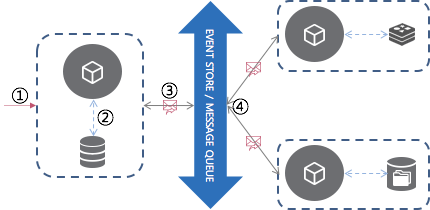

Event Driven 란?
Event Driven은 IT 영역에서 오래 사용된 키워드이며, 현재도 그 영향력이 대단하여 2018년 Gartner에서 선정한 유망한 기술 트렌드 중 하나로 뽑히기도 했다.
(Top 10 Strategic Technology Trends for 2018: Event-Driven Model)
Event Driven이라는 용어는 programming, architecture와 연결되어 다양한 정의로 표현된다.
EDA (Event-driven architecture)
분산된 시스템 간에 이벤트를 생성, 발행 (publishing)하고 발행된 이벤트를 필요로하는 수신자에게 전송된다.
이벤트를 수신한 수신자가 이벤트를 처리하는 형태의 시스템 아키텍쳐
- Event Driven Pattern - 특정 행동이 자동으로/순서에 따라 발생하는 것이 아닌 어떤 일에 대한 반응으로 동작하는 디자인 패턴
- IO Event - 컴퓨터 회로를 구동시키기 위해 발생하는 일 ( ex) 마우스 클릭, 키보드 타이핑, 모바일 터치 등)
- IOT 기기 등의 센서로부터 유입되는 데이터 스트리밍 기반의 동작
- 시스템의 내,외부에서 발생한 주목할 만한 상태의 변화(a significant change in state)
주로 Event Driven 시스템은 Message Broker(Kafka, Rabbit MQ, Redis)와 결합하여, Message Driven 시스템으로 구성된다.
EDA (Event-driven architecture)의 구성요소
EDA는 크게 3개의 구성요소로 나누어 볼 수 있다.
- Event generator : 시스템 내,외부의 상태 변화를 감지하여 표준화된 형식의 이벤트를 생성
- Event channel : 이벤트를 필요로 하는 시스템까지 발송
- Event processing engine : 수신한 이벤트를 식별, 적절한 처리를 함. 때에 따라 이벤트 처리의 결과로 또 다른 이벤트를 발생시킬 수 있다.
Event Processing Style
수신한 이벤트를 처리하는 방법에는 세가지 종류가 있다.
Simple event processing
각각의 이벤트가 직접적으로 수행해야할 action과 매핑되어 처리 된다.
실시간으로 작업의 흐름을 처리할 때 사용되며, 이벤트 처리 시간과 비용의 손실이 적다.
Event Stream Processing
이벤트를 중요도에 따라 필터링하여 걸러진 이벤트만을 수신자에게 전송.
실시간으로 정보의 흐름을 처리할 때 사용되며, 기업에 적용될 경우 신속한 의사 결정을 가능케한다.(BAM)
Complex event processing
일상적인 이벤트의 패턴을 감지하여 더 복잡한 이벤트의 발생을 추론하는 것.
예를 들어 ‘주식의 등락’이라는 일상적인 이벤트의 패턴을 감지하여 ‘투자 적기’라는 상위의 이벤트를 추론해 낼 수 있다.
Event Driven Architecture의 장단점
장점
- Decoupling - 시스템 간의 느슨한 결합이 가능 하므로 분산 시스템, Microservice 환경에서 시스템 간 의존성을 배제 할 수 있다
(시스템은 Event Channel인 Message Broker에 대한 의존성만 가진다.) - 다른 시스템의 정보를 알 필요가 없다 - 약속된 Event message를 가지고 상호 정보를 교환한다.
- micro service 단위로 시스템을 분리하기 쉽기 때문에 확장성, 탄력성을 고려하기 쉽다.
단점
- Broker Dependency - Event를 전송하기 위한 Message Broker에 대한 의존성이 커지기 때문에
Message Broker 장애 상황 시, 전체 장애로 이어질 수 있다. - Transaction 단위가 격리되기 때문에 서비스 장애 발생시 retry/rollback을 고려해야 한다.
- 시스템 전체 Flow를 파악하기 어렵다. - 명확한 Flow를 보기 위해서는 시스템을 모니터링하여야 한다.
- 디버깅이 어렵다.
Microservice에서의 Event

EDM(Event Driven Microservice)
MSA가 적용된 시스템에서 이벤트 발생시 해당 이벤트 로그를 보관하고 이를 기반으로 동작하며,
비동기 통신을 통해 시스템 내 통합(integration)을 수행하는 Architecture
Event
IT 영역에서의 이벤트는 다양한 정의를 포함하지만, MSA에서 의미하는 이벤트는
시스템의 내,외부에서 발생한 주목할 만한 상태의 변화(a significant change in state)
데이터의 생성, 변경, 삭제를 통해 발생하는 서비스의 의미 있는 변화를 의미
이벤트 로그를 보관
- github를 예시들어 이해하면 이해가 편할 것 같습니다.
현재의 데이터는 상태 변경의 누적이다.
- github의 commit 한 스냅샷의 연속으로 현재의 소스가 변경
상태 변경은 이벤트를 의미하고 이를 누적하는 행위는 이벤트 로그를 보관하는 것
- github에 commit = Event
commit 로그는 이벤트를 보관하는 행위
보관된 이벤트는 데이터의 현재 상태를 구성하는 근간
- github는 commit이라는 이벤트를 보관하는 store의 역할을 해주며
commit의 누적으로 인해 현재의 소스를 구성할 수 있다.
보관된 이벤트를 바탕으로 장애 발생 또는 특정 요구사항에 따라 지정된 시점으로 복원을 수행
- github는 특정시점으로 롤백 및 revert가 가능
비동기 통신
amqp, mqtt, jms 등 메세징 프로토콜을 통한 메세지 큐 방식이 자주 사용됩니다.
서비스에서 데이터의 생성,변경,삭제(CUD)를 통해 이벤트가 발생하면 발행 서비스는 메세지의 형태로 이벤트를 발행하고, 해당 이벤트에 관심이 있는 서비스에서 구독을 수행합니다.
메세지 큐를 사용함으로 requeue/dlq(dead letter queue) 등의 기능을 활용할 수 있습니다.
시스템 내 통합(integration)
이상적으로 구현된 MSA는 서비스 간 데이터 참조를 위한 내부 통신이 필요없지만, 현실적으로 서비스 간 내부 통신이 전혀 없는 시스템을 구현하기란 불가능에 가깝습니다. 다양한 사유로 여러 서비스 간 통신을 통해 연동이 발생합니다.
트랜잭션 관리
microservice 단위로 분리된 환경이기 때문에 각자 데이터베이스를 적용한 시스템에 대해 데이터 무결성을 보장할 수는 없지만
Event를 통해 최종적인 일관성을 유지 할 수는 있습니다.
all commit or rollback → eventually consistency (언젠가는 맞는다.)